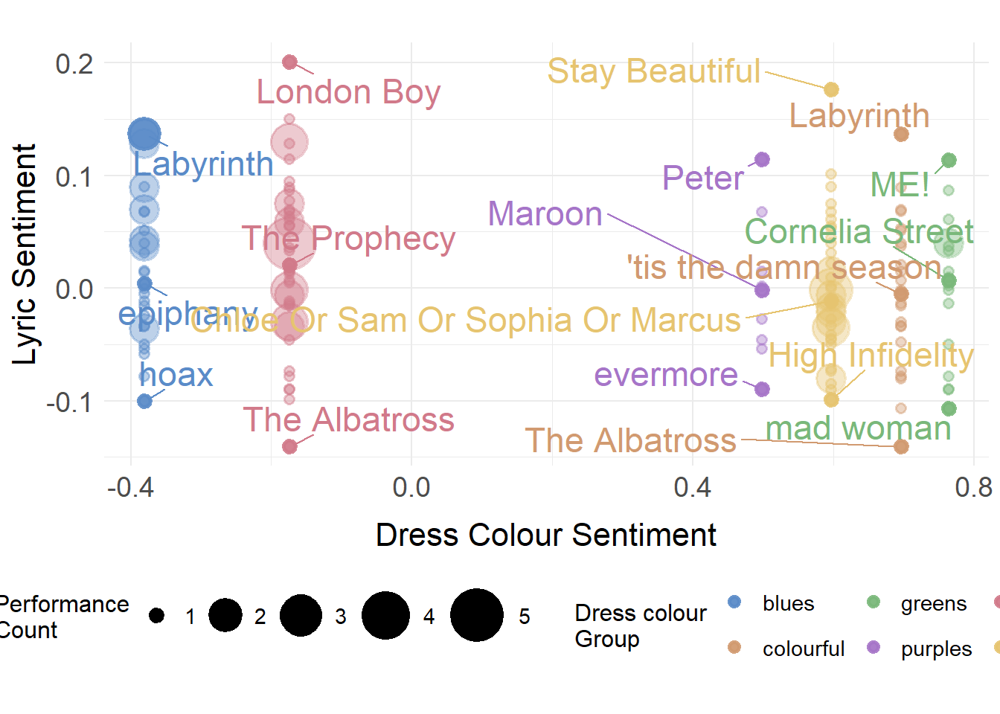

require(sentimentr)
require(taylor)
require(ggrepel)5 Lyric Sentiments
## taylor_album_songs from taylor package
lyrics_df <- taylor_album_songs %>%
unnest(lyrics) %>%
select(album_name, track_name, track_number, line, lyric, element)
lyrics_df$row_id <- 1:nrow(lyrics_df)
sentences_with_id <- get_sentences(lyrics_df$lyric, lyrics_df$row_id) # this processes
## each line as its own sentence as it's using the row_id.
sentiment_with_id <- sentiment(sentences_with_id)
sentiment_summary <- sentiment_with_id %>%
group_by(element_id) %>%
summarise(
avg_sentiment = mean(sentiment, na.rm = TRUE),
word_count = sum(word_count)
)
## Join
lyrics_sentiment <- lyrics_df %>%
left_join(sentiment_summary, by = c("row_id" = "element_id"))
## Aggregate by song to get net sentiment score
song_sentiment_scores_sentimentr <- lyrics_sentiment %>%
group_by(track_number, track_name, album_name) %>%
summarize(
sum_sentiment = sum(avg_sentiment),
total_sentiment_words = n(),
avg_sentiment = sum(avg_sentiment) / n(),
.groups = "drop"
)albumOrder <- c("Taylor Swift", "Fearless (Taylor's Version)",
"Speak Now (Taylor's Version)", "Red (Taylor's Version)",
"1989 (Taylor's Version)", "Reputation", "Lover",
"folklore", "evermore", "Midnights",
"THE TORTURED POETS DEPARTMENT")
lyrics_sentiment <- lyrics_sentiment %>%
mutate(album_name = factor(album_name, levels = albumOrder))
lyrics_sentiment <- lyrics_sentiment %>%
filter(!is.na(album_name))## Plot the net sentiment scores
ggplot(lyrics_sentiment, aes(x = track_number, y = avg_sentiment, fill = album_name)) +
geom_col(show.legend = FALSE) +
facet_wrap(~album_name, ncol = 3, scales = "free") +
scale_fill_manual(values = colorPaletteAlbums) +
theme_minimal() +
labs(
title = "The emotional spectrum across Taylor Swift's discography",
x = "Track Number",
y = "Net Sentiment (Positive - Negative Words)"
) +
theme(plot.title = element_text(hjust=0.5))song_sentiment_scores_sentimentr <- lyrics_sentiment %>%
group_by(track_number, track_name, album_name) %>%
summarize(
sum_sentiment = sum(avg_sentiment),
total_sentiment_words = n(),
avg_sentiment = sum(avg_sentiment) / n(),
.groups = "drop"
)
surpriseSongsDressColours <- surpriseSongsDressColours %>%
mutate(DressColourGroup = case_when(
DressName %in% c("Pink", "Flamingo pink") ~ "Reds",
DressName %in% c("Blue", "Ocean blue") ~ "Blues",
DressName %in% c("Yellow", "Sunset orange") ~ "Yellows",
DressName %in% c("Cotton candy", "Grapefruit", "Popsicle") ~ "Colourful",
DressName == "Blurple" ~ "Purples",
DressName == "Green" ~ "Greens"
))
dress_song_sentiment_scores_sentimentr <- surpriseSongsDressColours %>%
left_join(song_sentiment_scores_sentimentr, by = c("Song title" = "track_name")) %>%
filter(!is.na(avg_sentiment))
dress_group_sentiments <- dress_song_sentiment_scores_sentimentr %>%
group_by(DressColourGroup) %>%
summarise(
performance_weighted_sentiment = mean(avg_sentiment, na.rm = TRUE),
n_performances = n(),
.groups = 'drop'
)## recall the CA from before
colorSentimentScores$colourGroup <- colorGroups[colorSentimentScores$colour]
cols.df <- as.data.frame.matrix(table(colorSentimentScores$colourGroup, colorSentimentScores$meaning))
coa <- FactoMineR::CA(cols.df)## here we flip so that dim 1 is "-ve --> +ve"
colour_coa_table <- coa$row$coord %*% diag(c(-1,1)) |>
as.data.frame() |>
rownames_to_column("colour_category") |>
select(colour_category, colour_sentiment = V1) |>
as_tibble()
colour_sentiments <- colour_coa_table %>%
mutate(
DressColourGroup = case_when(
colour_category == "blues" ~ "Blues",
colour_category == "colorful" ~ "Colourful",
colour_category == "greens" ~ "Greens",
colour_category == "purples" ~ "Purples",
colour_category == "reds" ~ "Reds",
colour_category == "yellows" ~ "Yellows",
TRUE ~ NA_character_
)
) %>%
filter(!is.na(DressColourGroup))
dress_group_sentiments <- dress_song_sentiment_scores_sentimentr %>%
group_by(DressColourGroup) %>%
summarise(
performance_weighted_sentiment = mean(avg_sentiment, na.rm = TRUE),
n_performances = n(),
.groups = 'drop'
)
combined_analysis <- dress_group_sentiments %>%
left_join(colour_sentiments, by = "DressColourGroup") %>%
select(DressColourGroup, performance_weighted_sentiment, colour_sentiment, n_performances)Let’s plot.
song_performance_counts <- dress_song_sentiment_scores_sentimentr %>%
group_by(`Song title`, DressColourGroup) %>%
summarise(
avg_sentiment = first(avg_sentiment),
performance_count = n(),
.groups = 'drop'
)
plot_data <- song_performance_counts %>%
left_join(colour_sentiments, by = "DressColourGroup") %>%
filter(!is.na(colour_sentiment))
## Top songs (highest sentiment) for each color group
top_songs <- plot_data %>%
group_by(DressColourGroup) %>%
slice_max(avg_sentiment, n = 1, with_ties = FALSE) %>%
ungroup()
## Bottom songs (lowest sentiment) for each color group
bottom_songs <- plot_data %>%
group_by(DressColourGroup) %>%
slice_min(avg_sentiment, n = 1, with_ties = FALSE) %>%
ungroup()
## Medium songs (closest to median for each color group)
medium_songs <- plot_data %>%
group_by(DressColourGroup) %>%
mutate(
median_sentiment = median(avg_sentiment, na.rm = TRUE),
distance_from_median = abs(avg_sentiment - median_sentiment)
) %>%
slice_min(distance_from_median, n = 1, with_ties = FALSE) %>% # Closest to median per color (medium)
ungroup()
highlight_songs <- bind_rows(
top_songs,
bottom_songs,
medium_songs) %>%
distinct(`Song title`, DressColourGroup, .keep_all = TRUE)
colourGroupPalette <- c(
"blues" = "#5A8BC8",
"reds" = "#D17A8A",
"purples" = "#A675C8",
"greens" = "#7AB87A",
"yellows" = "#E6C470",
"colourful" = "#D19A70"
)
ggplot(plot_data, aes(x = colour_sentiment, y = avg_sentiment)) +
geom_point(aes(size = performance_count, colour = tolower(DressColourGroup)),
alpha = 0.4, stroke = 0.8) +
geom_point(data = highlight_songs,
aes(size = performance_count, colour = tolower(DressColourGroup)),
alpha = 0.9, stroke = 1.5) +
geom_text_repel(data = highlight_songs,
aes(label = `Song title`, colour = tolower(DressColourGroup)),
size = 6,
max.overlaps = Inf,
box.padding = 0.5,
point.padding = 0.3,
min.segment.length = 0.1,
show.legend = FALSE) +
scale_size_continuous(name = "Performance\nCount",
range = c(2, 12),
breaks = c(1, 2, 3, 4, 5),
guide = guide_legend(override.aes = list(alpha = 1))) +
scale_colour_manual(values = colourGroupPalette,
name = "Dress colour\nGroup") +
labs(title = "",
subtitle = "",
x = "Dress Colour Sentiment",
y = "Lyric Sentiment",
caption = "") +
theme_minimal() +
theme(
plot.title = element_blank(),
axis.title.x = element_text(size = 16,
margin = margin(t = 10)),
axis.title.y = element_text(size = 16),
axis.text = element_text(size = 14),
legend.title = element_text(size = 12),
legend.text = element_text(size = 11),
legend.position = "bottom",
legend.box = "horizontal"
)
What about group-wise correlation?
## We only have 6 observations, not great, but let's go ahead anyway!
## Pearson's correlation
cor.test(combined_analysis$performance_weighted_sentiment,
combined_analysis$colour_sentiment)
Pearson's product-moment correlation
data: combined_analysis$performance_weighted_sentiment and combined_analysis$colour_sentiment
t = -5.4996, df = 4, p-value = 0.005329
alternative hypothesis: true correlation is not equal to 0
95 percent confidence interval:
-0.9935629 -0.5403340
sample estimates:
cor
-0.9397859 ## Spearman's correlation
cor.test(combined_analysis$performance_weighted_sentiment,
combined_analysis$colour_sentiment,
method = "spearman")
Spearman's rank correlation rho
data: combined_analysis$performance_weighted_sentiment and combined_analysis$colour_sentiment
S = 54, p-value = 0.2972
alternative hypothesis: true rho is not equal to 0
sample estimates:
rho
-0.5428571 ## Spearman's correlation with 95% CIs
correlation::cor_test(data = combined_analysis,
x = "performance_weighted_sentiment",
y = "colour_sentiment",
method = "spearman")Parameter1 | Parameter2 | rho | 95% CI
-------------------------------------------------------------------------
performance_weighted_sentiment | colour_sentiment | -0.54 | [-0.94, 0.51]
Parameter1 | S | p
----------------------------------------------
performance_weighted_sentiment | 54.00 | 0.266
Observations: 6